Chinese Caligraphy

Chinese calligraphy is a form of aesthetically pleasing writing (calligraphy), or, the artistic expression of human language in a tangible form. This type of expression has been widely practiced in China and has been generally held in high esteem across East Asia. There are some general standardizations of the various styles of calligraphy in this tradition.
Tools
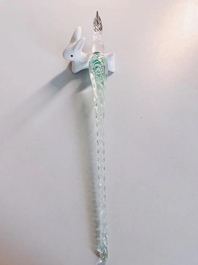 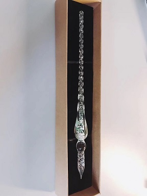 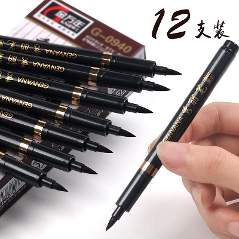
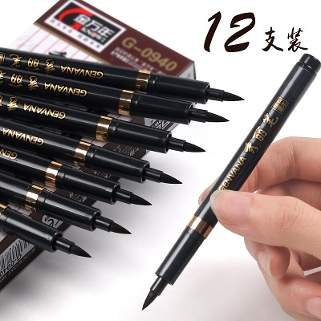
 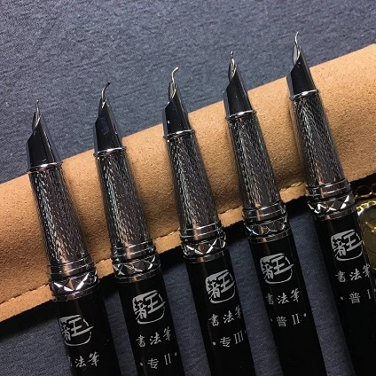
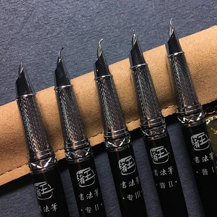
 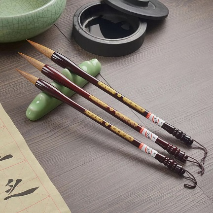
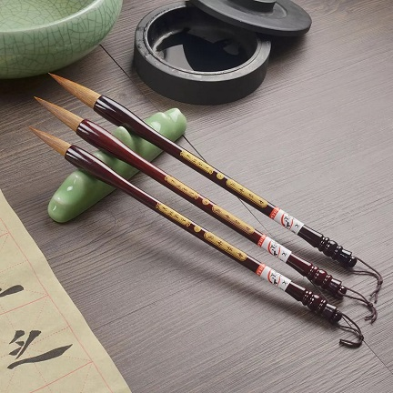
My works
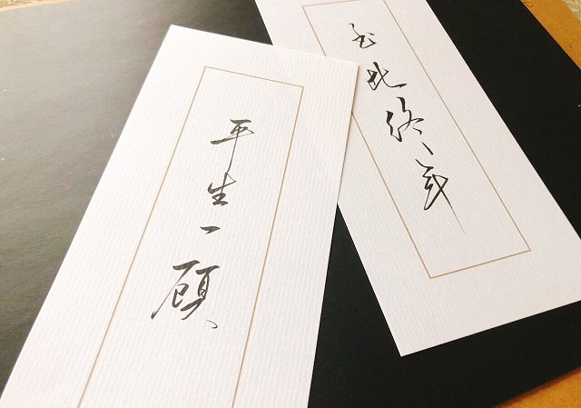 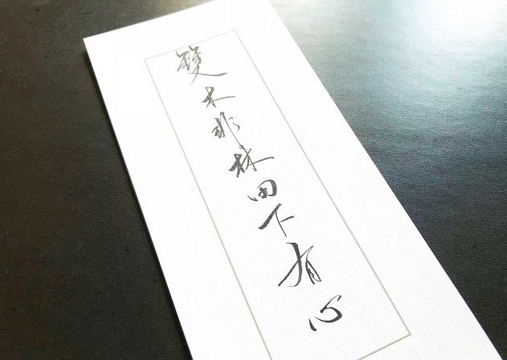 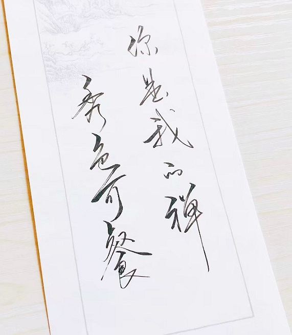
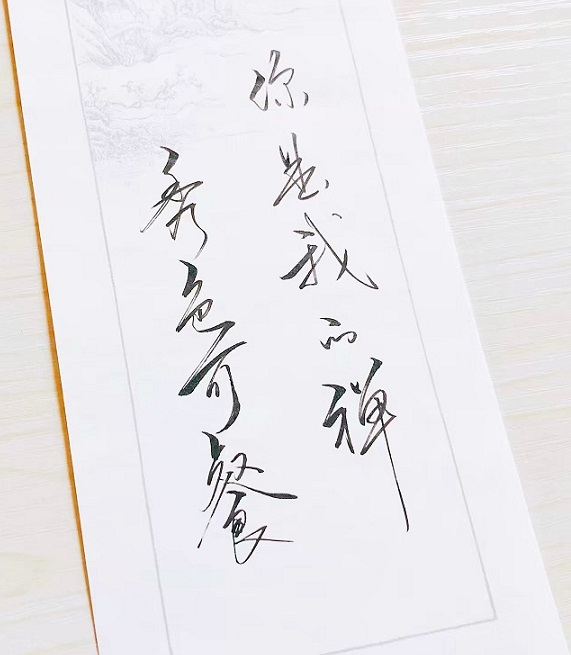
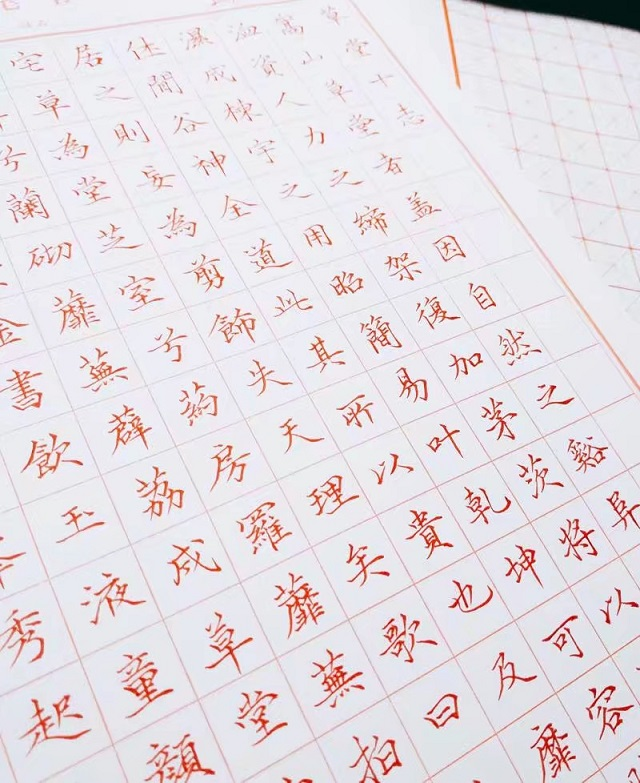 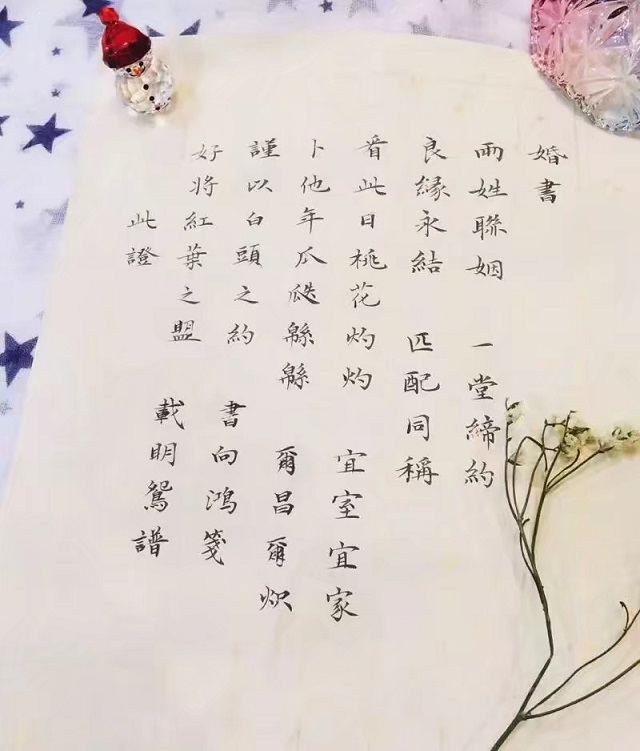
 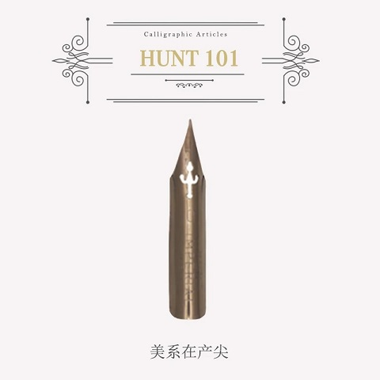
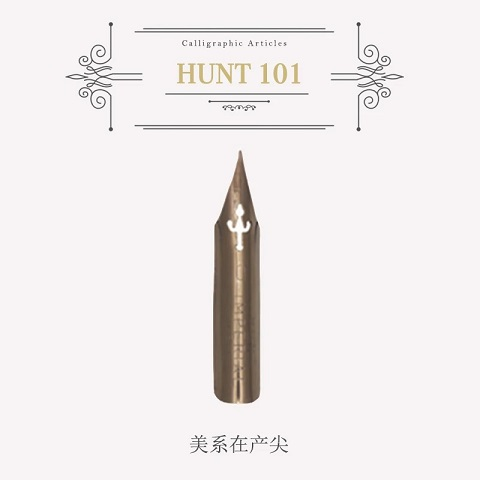
 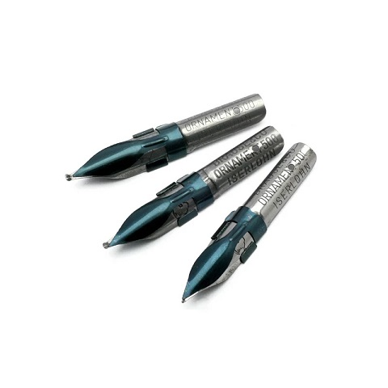
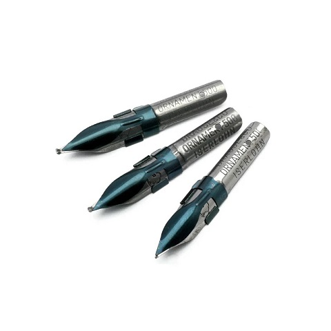